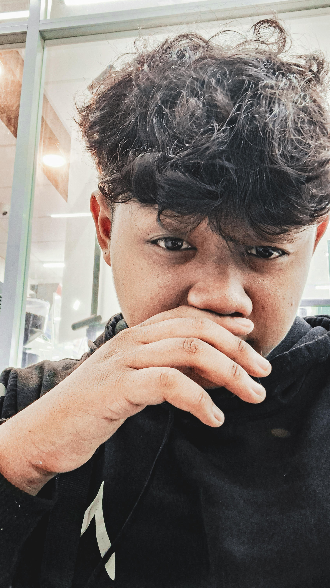
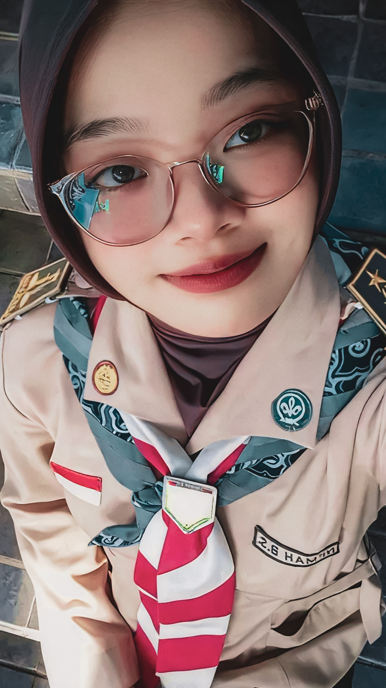

CHAPTER TWO • OUR STORY Dua tempat.
Dua tempat.
Satu cerita.
Belum ada foto kita berdampingan. Namun, bukan berarti cerita ini belum dimulai.

✦sosok asli
pasangan termbledoss✦
pasangan termbledoss✦

“Memang, aku dan kamu belum pernah jalan jalan berdua, tapi mungkin dari komunikasi kita tiap hari, saling cerita, dan saling perhatian, kita akan mempertahankan hubungan ini selamanya.”
01
HARI KETIKA SEMUANYA BERMULA
Awal sebuah cerita
Dari sebuah pertemuan tak disangka, ternyata ada cerita yang terus berlanjut selamanya, kiww.
02
SEJAK KITA SALING MENGENAL
Jarak yang kita jaga
Bukan setiap hari mudah, tetapi kita terus belajar memahami satu sama lain.
∞
SUATU HARI, INSYAALLAH
Pertemuan yang belum terjadi
Semoga kelak ada hari ketika kita bisa bercerita satu sama lain tanpa ada halangan.
Psst... ada kilau kecil yang tertinggal di cerita ini.
02 / 07Lihat langit kita